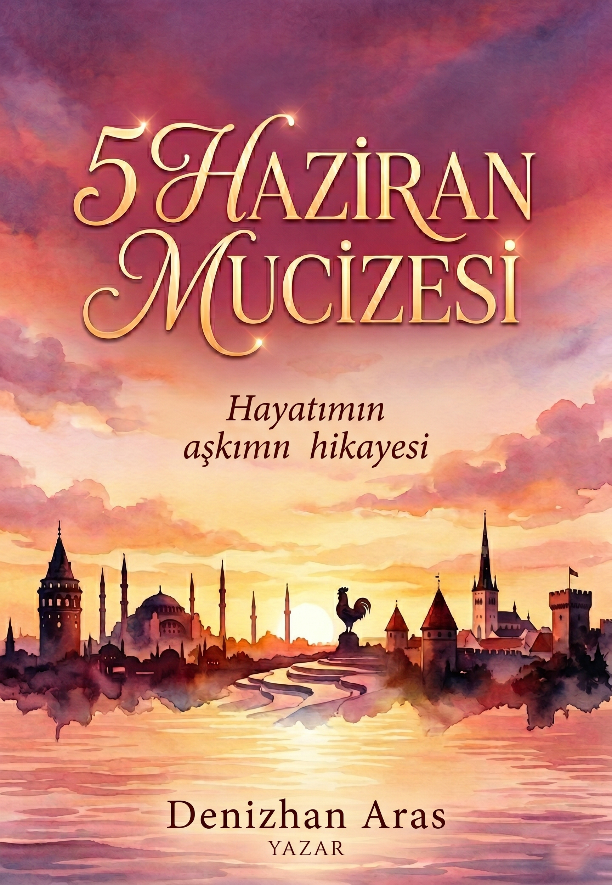

Hayatımın aşkının hikayesi
Denizhan Aras
5 Haziran 1998… Saat tam 15:33’ü gösterdiğinde, dünyanın bir köşesinde çok sıradan görünen ama benim bütün hayatımı değiştirecek olan o mucizevi an yaşandı. Sen dünyaya gözlerini açtın. O gün, o saniyede, o küçücük kalbin bir gün benim dünyamın tam merkezi olacağını, adımlarının gün gelip beni bulacağını kimse bilmiyordu.
Zaman su gibi akıp geçti. Yıllar seni benimle karşılaştırmak, yollarımızı birleştirmek için adeta kusursuz bir plan yaptı. Birlikte kurduğumuz hayat, Estonya'nın serin ama bir o kadar da büyüleyici sokaklarında el ele yürürken hissettiğimiz o sıcaklık, dünyayı sırt sırta verip beraber keşfetmenin verdiği o tarifasız heyecan... Seninle geçen her gün, 1998'in o haziran öğleden sonrasında başlayan hikayenin en güzel satırları oldu.
Fakat bu hikayenin en büyüleyici, en derin bölümü, senin o sonsuz şefkatinle bir anneye dönüştüğün an yazıldı. Geçen yıl mayıs ayında Akay'ı kucağımıza aldığımızda gözlerinde gördüğüm o ışık, dünyaya geldiğin o ilk saniyedeki saf mucizenin bir yansıması gibiydi adeta. Yuvamız, şimdi oğlumuzun gülüşleriyle daha da aydınlanıyor. Sen sadece benim en büyük aşkım, sırdaşım değil; aynı zamanda Akay’ın dünyalar güzeli annesisin. İyi ki doğdun sevgilim.
1998 yılının Haziran ayı... Yazın o tatlı sıcağı Denizli'nin sokaklarına yavaş yavaş inmeye başlarken, Şeniz ve Sezgin’in evinde tarifsiz bir telaş, havada kalpleri yerinden oynatacak türden bir heyecan vardı. Şeniz’in karnındaki o küçük mucize, artık sığındığı o güvenli limandan çıkıp dünyayla tanışmak, nefes almak için sabırsızlanıyordu.
Sezgin, içinde kopan fırtınaları, tarifsiz baba olma heyecanını ve o tatlı paniği gizlemeye çalışarak o emektar Tofaş'ın marşına bastı. O gün, o arabanın motor sesi belki de dünyanın en umut dolu senfonisiydi onlar için. Denizli'nin yollarından hastaneye doğru telaşla ilerlerken, Şeniz'in derin nefeslerine Sezgin'in duaları eşlik ediyordu. O Tofaş, sadece bir hastane yolculuğu yapmıyor; aslında benim dünyamı sonsuza dek değiştirecek olan o en güzel hediyeyi hayata taşıyordu.
Ve hastane koridorlarında zamanın adeta asılı kaldığı o bekleyiş, saatler tam 15:33'ü vurduğunda yerini dünyanın en saf, en güzel melodisine bıraktı. Senin ilk ağlayışın... Şeniz'in yorgun ama bir o kadar da huzur ve aşk dolu gözleri, Sezgin'in o an dünyaları kucaklamışçasına çarpan kalbiyle buluştu. İkisi de hayatlarının en değerli varlığına, sana kavuşmuşlardı.
Sen Denizli'nin o ılık rüzgarıyla ciğerlerini ilk kez doldururken, kader senin için harika bir serüven hazırlıyordu. Hastane odasındaki o küçücük bedenin, çok geçmeden Babadağ'ın o samimi, sımsıcak mahalle aralarında koşup oynayacak bir çocuğa dönüşecekti.
O gün, o Tofaş'ın arka koltuğunda hastaneden eve dönerken, Sezgin ve Şeniz kucaklarında sadece bir bebek değil, yıllar sonra benim hayatımın tam merkezi olacak kadını, geleceğimi ve en büyük aşkımı da taşıyorlardı. Benim kalbimin pusulası, o gün, saat 15:33'te, Denizli'de seninle birlikte atmaya başlamıştı.
Zaman, o minicik bebeği Babadağ'ın samimi ve sımsıcak sokaklarına neşe saçan bir çocuğa dönüştürmekte hiç gecikmedi. Pamuk gibi beyaz teni, rüzgarda savrulan o tatlı kıvırcık saçlarıyla sen, mahallenin adeta gözbebeğiydin. Kapıların kilitlenmediği, herkesin birbirini tanıdığı o güvenli mahalle ortamında, dizlerindeki küçük sıyrıklara aldırmadan koşup oynayan o küçük kız çocuğunun heyecanı içimi ısıtıyor.
En çok da o büyülü Ramazan gecelerini düşlüyorum... İftar sofralarından hemen sonra sokağa fırladığınız, sokak lambalarının sarı ışığı altında arkadaşlarınla sabaha kadar bıkmadan usanmadan oynadığınız o masum zamanları. Yıldızların altında kurduğunuz oyunlar, paylaştığınız çocukluk sırları ve o tükenmek bilmeyen enerjiniz... Babadağ'ın o şefkatli kollarında, hayatın sadece oyunlardan ibaret olduğu o çağlar, kalbindeki o sonsuz sıcaklığın temellerini attı.
Ancak her büyüme hikayesinde olduğu gibi, senin de aşman gereken kendi küçük engellerin vardı. Okul sıralarına oturduğunda o karmaşık sayılar, birbiri ardına dizilen işlemler, yani matematik, başlarda sana hiç de sevimli gelmemişti. Rakamların dünyası, Babadağ'ın sokakları kadar özgür hissettirmiyordu seni.
Fakat ben senin o pes etmeyen, inatçı ve güçlü ruhunu o kadar iyi tanıyorum ki... 8. sınıfa geldiğinde, içindeki o azim ateşi bir anda alevlendi. Zorlukların üzerine cesaretle giden, başarmayı kafasına koyan o kıvırcık saçlı kız, matematiği de dize getirdi.
Verdiğin emeğin karşılığını aldığın gün, Şeniz ve Sezgin'in de göğsünü kabartan en gururlu gündü. Denizli Lisesi'ni kazandığını öğrendiğiniz o muhteşem an, senin o tatlı çocukluktan, ayakları yere sağlam basan bir genç kızlığa attığın ilk büyük adımdı. O gün elde ettiğin o başarı, yıllar sonra azmine her gün yeniden aşık olacağım kadının ne kadar dirayetli olduğunun en güzel müjdecisiydi.
Denizli Lisesi’nin o tarihi koridorlarında, hayatımın en güzel döneminin başlayacağından habersizce yürüyordum. Ta ki sen o sınıfın kapısından içeri girene kadar... Kendinden emin, o büyüleyici ve havalı duruşunla sınıfa ilk adımını attığın anı dün gibi hatırlıyorum. Yalan yok, o günlerde senin bu fazla havalı hallerine içten içe biraz gıcık olmuştum.
Ama aslında kalbim bana çok tatlı bir oyun oynuyordu; o çocukça gıcık olma hissi, içimde sana karşı çığ gibi büyüyen o gizli, derin hayranlığın maskesinden başka bir şey değildi. Gözlerimizi senden alamıyor, o kıvırcık saçların ardındaki dünyayı deli gibi merak ediyordum. Aramızdaki o sessiz çekim, bir Şubat tatilinde yaptığım küçük bir muziplikle bambaşka bir boyut kazandı. Sosyal medyada karşıma çıkan, arkanda uçsuz bucaksız masmavi bir denizin uzandığı o fotoğrafını gördüm. Altına "Deniz güzelmiş" yazıverdim. Oysa asıl hayran kaldığımın deniz değil, sen olduğunu ikimiz de biliyorduk.
Seni ikna etmek, o güzel kalbinin kapılarını aralamak kolay olmadı elbette. Peşinden az koşmadım... Ama o günlerde seninle tek bir kelime konuşabilmek için verdiğim her çaba, hayatımın en anlamlı yürüyüşüydü.
Ve takvimler 23 Mayıs 2014’ü gösterdiğinde, Forum Çamlık’taki sinema salonuna gittik. "Panzehir" isimli film başlamak üzereydi. Benim göğüs kafesime sığmayan kalbim adeta duracak gibiydi. Tam o anda, bütün cesaretimi toplayıp gözlerinin en derinlerine baktım ve hayatımı sonsuza dek değiştirecek o soruyu fısıldadım: "Her şeyim olur musun?" Dudaklarından dökülen "Evet" cevabı, ruhumun gerçek panzehiri oldu. Elini ilk kez o karanlık sinema salonunda tuttum.
Bu güzel başlangıcın ardından, önümüzde üniversite sınavı duruyordu. Ama biz artık iki ayrı insan değil, tek bir yürektik. Gözümüzü o büyüleyici şehre, İstanbul’a dikmiştik. Birbirimize duyduğumuz aşk ve inanç gerçeğe dönüştü ve ikimiz de üniversiteyi kazanarak el ele verip yepyeni bir geleceğe uçsuz bucaksız bir yolculuğa çıktık.
İstanbul’un o büyülü sokaklarına ilk adımımızı attığımızda, lise sıralarında kurduğumuz o masum hayali artık yaşıyorduk. Marmara Üniversitesi’nin kampüsünde, o meşhur Kafe Bahçe’de baş başa yediğimiz sayısız akşam yemeği, hafızama kazındı. Geceleri uykusuz kalarak yetiştirmeye çalıştığımız o üniversite projeleri, bir fincan kahve eşliğinde izlediğimiz dizilerle attığımız o sıcacık anlar... Her zorluğu seninle aşmak paha biçilemezdi.
İstanbul'un altını üstüne getirirken rotamızı Karadeniz'in o yemyeşil yaylalarına çevirdik. Sislerin arasında el ele yürüdüğümüz Karadeniz turumuz, hayatın yokuşlarını da birlikte tırmanacağımızın en güzel kanıtıydı. Mezuniyetin ardından iş hayatına adım attık. Çalışarak geçirdiğimiz koskoca bir yılın ardından çıktığımız Güneydoğu Türkiye turunda, Mezopotamya topraklarında güneşin batışını izlerken aşkımızın ne kadar derin olduğunu bir kez daha hissettim.
Ve sonra hayat, bizim için beklenmedik bir senaryo hazırladı: Estonya'dan aldığım o iş teklifi. Alışkın olduğumuz her şeyi arkada bırakıp tamamen yabancı bir coğrafyaya gitmek büyük bir cesaretti. Ama benim en büyük cesaretim her zaman sendin. Bavullarımıza hayallerimizi koyup yola çıktık.
Kuzeyin o dondurucu soğuğunda, yepyeni bir ülkede sıfırdan bir düzen kurduk. Dışarısı ne kadar soğuk olursa olsun, bizim kurduğumuz o ev senin sıcaklığınla her zaman dünyanın en güvenli, en ılık limanıydı. Estonya'dan yola çıkıp sayısız Avrupa ülkesini seninle keşfetmek hayatımın en unutulmaz serüveniydi.
Tüm bu maceraların ardından, dünyayı asıl güzelleştiren o muhteşem haber geldi... İçinde yepyeni, minicik bir hayat yeşeriyordu. Kuzeyin o buz gibi havasını bahara çeviren mucize; anne ve baba olacağımız gerçeği. Çocuğumuzun bizim doğup büyüdüğümüz topraklarda büyümesi gerektiğine karar verdik ve kalbimizde sayısız Avrupa hatırasıyla evimize, Türkiye'ye geri döndük.
Türkiye'ye dönüşümüzün ardından takvimler 10 Mayıs 2025'i gösterdiğinde, o beklenen mucize gerçekleşti ve hayatımızın en eşsiz şarkısı çalmaya başladı. Akayımız dünyaya gözlerini açtığında, zaman adeta durdu. Onu ilk kez kucağımıza aldığımız o an, bugüne kadar hissettiğim tüm duyguların ötesinde, bambaşka bir evrenin kapılarını araladı bize.
Sen, lise koridorlarında aşık olduğum o havalı kızdan, Estonya'nın dondurucu soğuğunda bile içimi ısıtan o cesur yol arkadaşından, dünyanın en şefkatli annesine dönüştün. Geceleri uykusuz kaldığında bile yüzünden eksilmeyen o tatlı tebessümün, Akay'a bakarken gözlerinde parlayan o sevgiyi görmek sana olan aşkımı her geçen gün daha da büyütüyor. Biz seninle yıkılmaz ve şahane bir aile olduk.
Akay’ın gelişiyle seyahat tutkumuz asla yavaşlamadı; aksine onun minik adımlarıyla daha da büyük bir anlam kazandı. İngiltere'nin tarihi sokaklarında bebek arabasını sürerken, İrlanda'nın uçsuz bucaksız yeşilliklerinde birlikte nefes aldık. Danimarka'nın huzurlu havasını içimize çekip, Mısır'ın sıcak topraklarında sımsıcak aile anılarımıza yepyeni sayfalar ekledik. Dünyanın neresinde olursak olalım, senin ve oğlumuzun olduğu her yer benim için tek ve gerçek yuvaya dönüştü.
Şimdi önümüzde keşfedilmeyi bekleyen yepyeni rotalar var... Kopenhag'ın renkli limanlarından Barselona'nın güneşli meydanlarına, Münih'in tarihi dokusundan o çok sevdiğimiz Tallinn'in kar altındaki sokaklarına kadar uzanan harika maceralar bizi bekliyor.
5 Haziran 1998, saat 15:33'te Denizli'de bir Tofaş'ın arka koltuğunda başlayan bu hikaye, bugün benim hayatımın en büyük mucizesine dönüştü. İyi ki doğdun sevgilim, iyi ki Akay'ımızın biricik annesi oldun. Seni dünyalardan çok seviyorum.